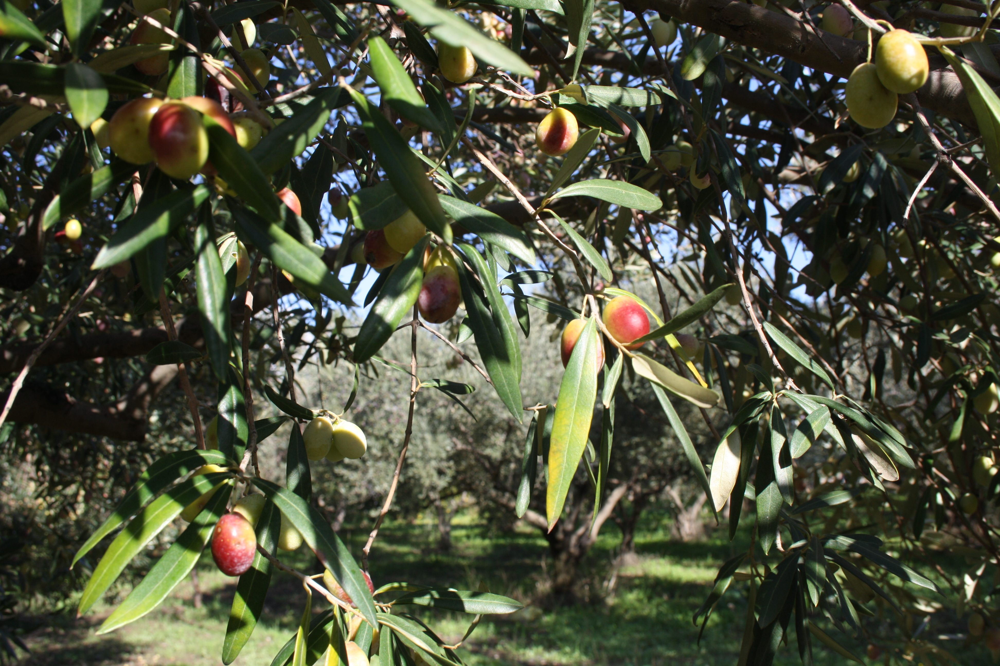
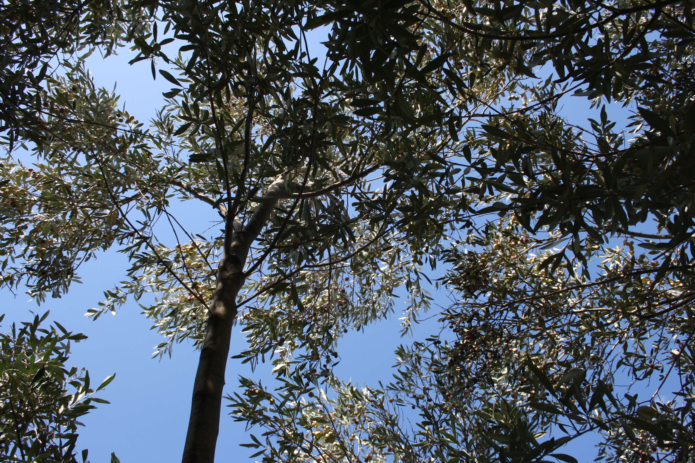
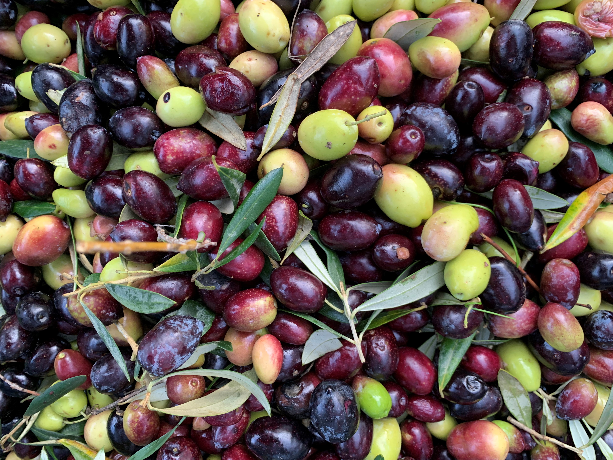
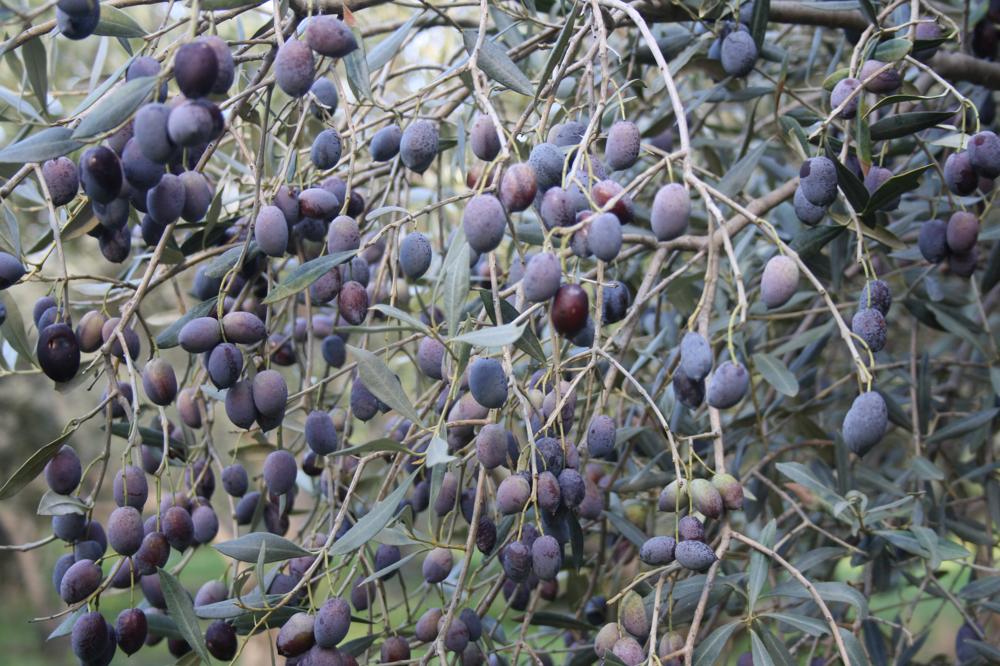
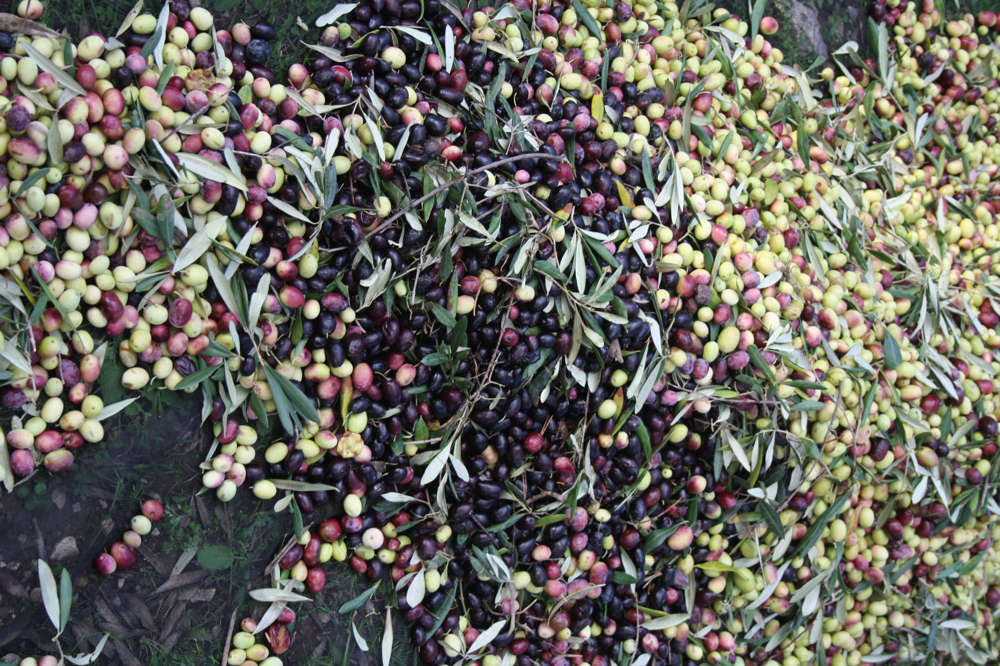

Embracing Traditions, Chasing Novelties Gelenekseli Kucaklıyoruz, Yenilikleri Kovalıyoruz

The necessities of the lifestyle
we are in pursuit of as a family:
flavor, health, nature, and pleasure.
Our goal is to share
this special blend with you.
Peşinde olduğumuz
hayatın vazgeçilmezleri:
Lezzet, sağlık, keyif ve doğa.
Amacımız bu harmanı
sizlerle buluşturmak.
About Us Hikayemiz
 We are boutique olive oil producers, in one of the biggest single estate olive farms in our region,
with 7000 olive trees in 20 hectares of land. We are in Reisdere village, 11 kms to Alacati, surrounded
on both sides by the rivers flowing to the water dam. Our land is a part of Erythrai, one of the twelve
Ionian cities of Asia Minor, also known as Anatolia. We produce Extra Virgin Olive Oil which represents
the hallmark of the Mediterranean diet. We are a family owned and run business, a family that has been
in food, service and tourism industry for 3 generations now.
Çeşme yarımadasında, Alaçatı’ya 11 km uzaklıktaki Reisdere köyünde 300 dönüme yakın, bölgemizin en büyük tek bahçe
zeytin çiftliklerinden bir tanesiyiz. Bizim hikayemiz iki jenerasyondur restoran ve otelcilik yapan bir ailenin,
ağacı olarak bilinen zeytine aşık olması ve 20 sene önce üretim yapmakta olduğumuz araziyi almalarıyla başlıyor.
Başlarda sadece kendi tüketimimiz ve Alaçatı’daki restoranımız Papazz için ürettiğimiz zeytin yağı, hobi ve
öğrenim deneyimi olmaktan çıkıp bir tutkuya dönüştü. Ağacın kendisinin, meyvesinin ve yağının büyüsüne kapılıp
istemsizce daha fazlasını bilmeye, öğrenmeye ve üretmeye başladık.
We are boutique olive oil producers, in one of the biggest single estate olive farms in our region,
with 7000 olive trees in 20 hectares of land. We are in Reisdere village, 11 kms to Alacati, surrounded
on both sides by the rivers flowing to the water dam. Our land is a part of Erythrai, one of the twelve
Ionian cities of Asia Minor, also known as Anatolia. We produce Extra Virgin Olive Oil which represents
the hallmark of the Mediterranean diet. We are a family owned and run business, a family that has been
in food, service and tourism industry for 3 generations now.
Çeşme yarımadasında, Alaçatı’ya 11 km uzaklıktaki Reisdere köyünde 300 dönüme yakın, bölgemizin en büyük tek bahçe
zeytin çiftliklerinden bir tanesiyiz. Bizim hikayemiz iki jenerasyondur restoran ve otelcilik yapan bir ailenin,
ağacı olarak bilinen zeytine aşık olması ve 20 sene önce üretim yapmakta olduğumuz araziyi almalarıyla başlıyor.
Başlarda sadece kendi tüketimimiz ve Alaçatı’daki restoranımız Papazz için ürettiğimiz zeytin yağı, hobi ve
öğrenim deneyimi olmaktan çıkıp bir tutkuya dönüştü. Ağacın kendisinin, meyvesinin ve yağının büyüsüne kapılıp
istemsizce daha fazlasını bilmeye, öğrenmeye ve üretmeye başladık.
Our story in this farm however began when a couple fell in love with the “tree of life”, also known as the olive tree, 20 years ago and decided to buy this farm. What has started off as a curious interest, a hobby, has now turned into a dedicated passion. We could not help but want to learn, to educate ourselves and continuously aim for the highest quality possible. This is after all what the ancient Greek civilizations have referred to as liquid gold. As a family that has always sought after what is indigenous, local, special and delicious we are working towards creating a sustainable product, brand, space and lifestyle that upholds mother nature and all her gifts. Kurduğumuz markamızla yılların birikimini sizlerle paylaşmaya karar verdik. Her zaman yerli, yerel, özel ve güzeli arayan bir aile olarak doğal ve sürdürülebilirlik ilkelerini yansıtan bir marka, yaşam ve aktivite alanı oluşturmaya çalışmaktayız.
Our Location Konumumuz
Reisdere Mahallesi, Hirsiz Dere, Mevkii no.6,
35930, Çeşme/İzmir, Türkiye
Opening Hours: 00:00 - 00:00 (Mon - Sun)
Our Products Ürünlerimiz
Learn more about how we grow and harvest our olives and our natural oil production methods below.

Harvest and Production Üretimimiz
 Our harvesting techniques are traditional. This means that olives are picked by hand or with the assistance
of a rake. We retain from using sacks to collect the olives as this could result in olives heating up from
not getting enough oxygen. Therefore, our olives are collected into breathable 20-25kg cases with holes
around and transported to the pressing plant as soon as possible. All of our olive oils are natural extra
virgin, cold pressed and horizontally extracted. The extracted olive oil is then transferred to our airtight
chrome tanks, in our temperature-controlled storage space at the farm. In order to keep the oil at its most
natural state we do not filter it. The filtration occurs through natural decantation for 2-4 months. This way
we guarantee that the oil we bottle has the highest levels of its natural components and nutrients, while
also assuring a longer shelf life.
Zeytinlerimiz geleneksel yöntemle, yani ağaçtan el ile toplanır. Hasat süresince çuval kullanılmamasına
özen gösterilir. Bunun sebebi toplandıktan sonra zeytin kızışmasını önlemek içindir. Bu yüzden zeytinlerimiz hava alan
20-25 kg delikli kasalara toplanır ve bekletilmeden sıkım haneye götürülür. Sıkım haneden hava almayan krom tanklara
boşaltılan yağımız, en natürel hali ile dolumu yapılabilmesi için filtrelenmez. Filtrelenmesi, doğal yollar ile tankta
bekletilmesi sonucu posanın dibe çökmesi ile gerçekleşir.
Our harvesting techniques are traditional. This means that olives are picked by hand or with the assistance
of a rake. We retain from using sacks to collect the olives as this could result in olives heating up from
not getting enough oxygen. Therefore, our olives are collected into breathable 20-25kg cases with holes
around and transported to the pressing plant as soon as possible. All of our olive oils are natural extra
virgin, cold pressed and horizontally extracted. The extracted olive oil is then transferred to our airtight
chrome tanks, in our temperature-controlled storage space at the farm. In order to keep the oil at its most
natural state we do not filter it. The filtration occurs through natural decantation for 2-4 months. This way
we guarantee that the oil we bottle has the highest levels of its natural components and nutrients, while
also assuring a longer shelf life.
Zeytinlerimiz geleneksel yöntemle, yani ağaçtan el ile toplanır. Hasat süresince çuval kullanılmamasına
özen gösterilir. Bunun sebebi toplandıktan sonra zeytin kızışmasını önlemek içindir. Bu yüzden zeytinlerimiz hava alan
20-25 kg delikli kasalara toplanır ve bekletilmeden sıkım haneye götürülür. Sıkım haneden hava almayan krom tanklara
boşaltılan yağımız, en natürel hali ile dolumu yapılabilmesi için filtrelenmez. Filtrelenmesi, doğal yollar ile tankta
bekletilmesi sonucu posanın dibe çökmesi ile gerçekleşir. Bu şekilde dinlendirilmiş, herhangi bir kimyasal süreçten geçmemiş yağımızın en natürel dolumu ve daha uzun süre tüketimi garantilenmiş olur. Bu sebepten ötürü yağlarımız, özellikle hasat sonrası sınırlı sayıda ürettiğimiz Filtresiz Erken Hasat Soğuk Sıkım Natürel Sızma Zeytinyağımız, bulanık bir görüntüye sahip olabilir ve zamanla dibinde posa oluşabilir. Bunun yaşanması çok doğaldır ve tazelik göstergesidir. Ancak krom tanklarda 2 ay ve üstü bir süre dinlendikten sonra daha saydam bir görüntüye ulaşılır.
Bottling and Consumption Şişelenme ve Tüketim
When consuming olive oil, we must remember that it is an oil of a fruit therefore we must be mindful of its storage. We must minimize its oxidization; keep it airtight, eliminate sunlight exposure and store it at between 18-23° Celsius. Best way to consume olive oil is always sooner versus later, our recommendation would be within 3 to 6 months after opening the package*. The FFA ratio of our oils therefore may vary from 0.4 to 0.9 depending on the storage after purchasing.
* We must underline that this recommendation is for the optimal taste and nutrients, however it is commonly advised that olive oil should be consumed within 2 years. Zeytin yağımızın şişelenmesi sipariş üzerinedir, böylelikle en optimal saklama koşullarında saklanmış, daha uzun süreli tüketimi ve tazeliği garantilenmiş olur. Zeytinyağı tüketilirken önemli ve dikkat edilmesi gereken hususlar vardır.
Zeytinin yağının bir meyve yağı olmasının unutulmaması ve o yüzden doğru koşullarda muhafaza edilmesi önemlidir.
Üretilmiş asit seviyesinde ve tazeliğinde tüketilmek isteniyorsa, 3-6 ay içerisinde tüketilmesi önerilir. Yağlarımızın oleik asit seviyesi bu sebepten ötürü 0.4 ile 0.8 arasında değişim göstermektedir.
Contact Us İletişim
If you would like to get in touch with us, please email us or you can give us a call during opening hours. Alternatively, you can also contact us directly via social media.